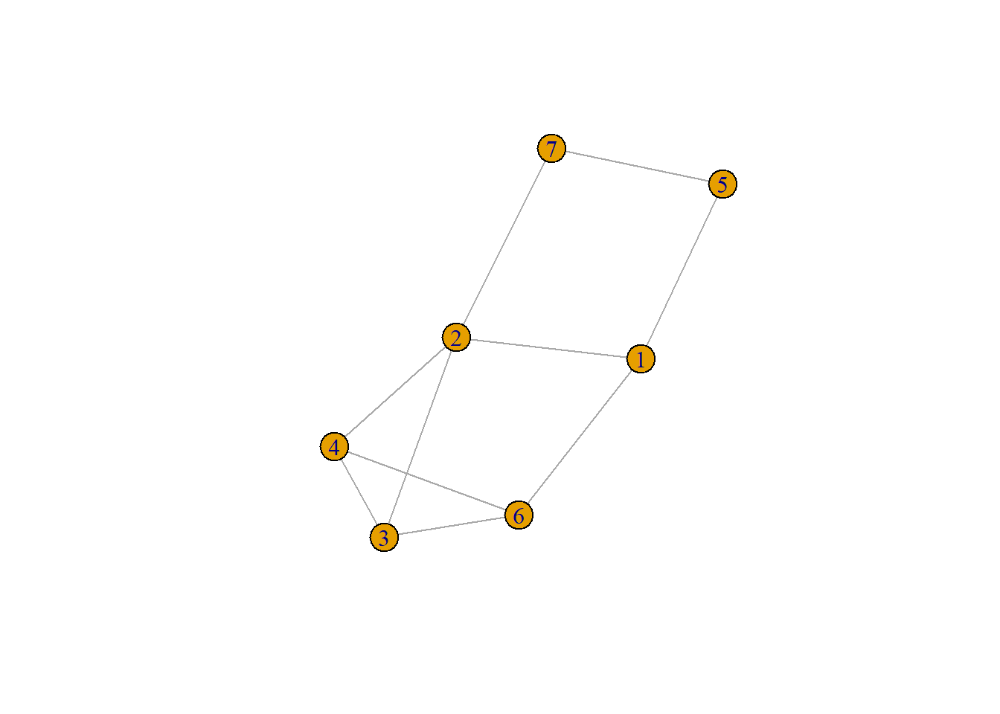
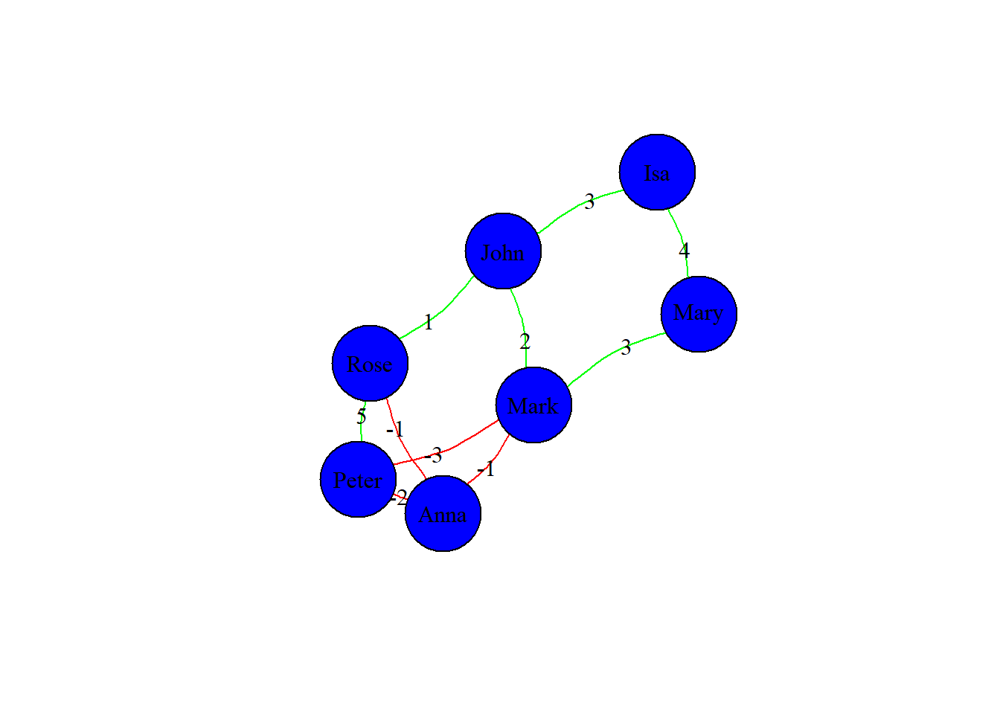

igraphR offers a whole series of packages to manipulate and plot network data. The basic one we are going to use is igraph, a package whose core is written and developed in C but which is mainly used through its high level implementations in R, Python and Mathematica.
It is on CRAN, so to install it just use
then we are ready to use it by calling it with the usual library function
##
## Attaching package: 'igraph'## The following objects are masked from 'package:stats':
##
## decompose, spectrum## The following object is masked from 'package:base':
##
## unionPlease not the masked objects from the stats and base packages in case you want to use those functions.
In this section we are going to see how to create small networks and how to obtain the information encoded in the igraph objects. As usual, there are different alternatives, for example, we are going to use graph.formula(), but we can also use graph(). It is highly recommended that you explore some of the other options until you feel conformtable with, at least, one of them.
As a warm-up exercise, let’s create a very basic case: an undirected network with 7 nodes. In this case we can directly use the graph.formula function, where we specify the edges between the named nodes by just using the “-”:
The object we create is a list of igraph objects, not directly accesible to us. However, there are different methods to see what we have:
E() and V() retrieve the edges (links, connections…) and the vertices (nodes, actors…) of the graph, respectivelystr() let us see the internal structure of the objectthen
## + 7/7 vertices, named, from 1dcaa7c:
## [1] 1 2 3 5 4 7 6## + 10/10 edges from 1dcaa7c (vertex names):
## [1] 1--2 1--5 1--6 2--3 2--4 2--7 3--4 3--6 5--7 4--6of course you can use the usual length function to obtain the order (number of vertices), \(N_v = |V|\), and the size (number of edges), \(N_e = |E|\), of the network. However, we also have predefined functions for this:
## [1] 7## [1] 10This is a good moment to build our first network graph. This is can be done with the plot function (you know that it just decides what to plot dependending on the supplied object), so without any extra parameter we have

Later we will see how to change the different decorations and parts of the plot: layout, colors, sizes…
If the previous graph were a digraph we may do it evident by just using combinations of plus and minus sings indicating if there exists direction towards the vertex or not. For example, we may do
which, when plot, returns a digraph with arrows directed towards those vertices that had a plus sing next to them in the formula definition.
Suppose that we want to change the names of the vertices in this graph, we can just do it using the typical R $-syntaxis and the assignment as follows
In general, if we are going to use a general setup fo the look of the vertices of a graph, it may be better to set the general properties of the vertices by using the vertex_attr() function (check the documentation for it) In our case we are going to set the names, colors, sizes and the labels
vertex_attr(g) <- list(names = c("John", "Mark", "Anna", "Isa", "Peter", "Mary", "Rose"),
color = rep("blue", gorder(g)),
size = rep(45, gorder(g)),
label.color = rep("white", gorder(g)))
vertex_attr(g, "label") <- V(g)$namesNow we can plot to see the result
if we want to see which are the vertex attributes we have at any point of our analysis, we can invoque them using:
## [1] "names" "color" "size" "label.color" "label"we can use any value of any of the composition variables of our dataset as an attribute of our vertices. This may be clearer once we deal with data frames in igraph.
We can equally set the attributes of the edges using the edge_attr() function. In this case, however, let’s pass the arguments directly in the plot function (to see another approach). Note that this makes that the changes we may do are not permanent, i.e. the weights we use for the graph are not part of the graph information, just part of the graph itself.
We will also include some properties for the vertices just to see that we can overwrite the general properties defined above for the particular graph we are doing
weights <- c(2,3,1,-1,-3,3,-2,-1,4,5)
plot(g,
edge.label = weights,
edge.label.color = "black",
edge.label.size = 2,
edge.color = ifelse(weights > 0, "green", "red"),
edge.curved = 0.2,
edge.size = 3,
# vertex.size = 12,
# vertex.label.dist = 2,
vertex.label.color = "black"
)
As for the vertices, we can see the attributes that are being used by the edges using:
## character(0)however, in this case, since we have not set the attributes but just give them a value during the plot, nothing shows up.
We can use edges attributes to define important network properties, for example, the weights of a weighted network, not just as labels as before, but as a proper attribute. In this case we should do the following
## [1] FALSE## [1] TRUEnow we can see that this weights appear as an attribute
## [1] "weight"Graph layouts are, probably, the heart of graph visualizations. They are specific ways of placing the vertices and edges in space, and we can find many different posibilities: from simple geometric forms: circles, stars or layers, to precise algorithms that determine the positions based on different models.
The most common algorithm is the force-directed of Fruchtermann-Reingold (FR), where a simple principle holds: linked vertices are attracted while not-liked vertices are pushed away. From this FR idea many others where derived: OpenOrd, Kamada-Kawai or Force Atlas are some examples (some of these can only be found in Gephi).
These force-directed algorithms use an analogy by treating vertices as balls and edges as springs, then the so-called, force is just the harmonic force of the spring (linearly dependent with the distance between the nodes), then the algorithm iterates trying to minimize the energy of the whole system by changing the positions of the vertices.
How to decide which layout we should choose? It will depend mostly on what we want to show and where do we need the emphasis of the representation:
There are, some limitations in the number of vertices, \(N\) in the table below, that the algorithms can handle (take this into account both, in R and in Gephi), which also affects its complexity:
| Algorithm | Maximum Order | Complexity |
|---|---|---|
| Fruchterman-Reingold | 1,000 | \(O(N^2)\) |
| Force Atlas | 10,000 | \(O(N^2)\) |
| Yifan Hu | 100,000 (with a minimum of 100) | \(O(N\log(N))\) |
| OpenOrd | 1,000,000 (with a minimum of 100) | \(O(N\log(N))\) |
| Force Atlas 2 | 1,000,000 | \(O(N\log(N))\) |
| Circular | 1,000,000 | \(O(N)\) |
In order to apply the KK algorithm, we need to reset the weights to positive numbers, so let’s just leave them as 1 for all the edges
Now we can see the effect of four different layouts:
par(mfrow = c(2,2), mai=c(0.3,0.3,0.3,0.3))
plot(g, layout = layout.circle, vertex.label.color = "black")
title("Circle Layout")
plot(g, layout = layout.star, vertex.label.color = "black")
title("Star Layout")
plot(g, layout = layout.fruchterman.reingold, vertex.label.color = "black")
title("Fruchterman-Reingold Layout")
plot(g, layout = layout.kamada.kawai, vertex.label.color = "black")
title("Kamada-Kawai Layout")It should not be surprising that KK and FR give rather similar results in this case: KK-algorithm derives from FR using the springs models but with a slightly different algorithm to model the forces bewteen the vertices. With a low number of vertices as in the example, the difference is negligible.
Try some of the other options and read the documentation in order to see what you are actually representing. Also, consider reading some style guides for the size of the nodes, coloring schemes and any other decorations to be included in the visualizations.